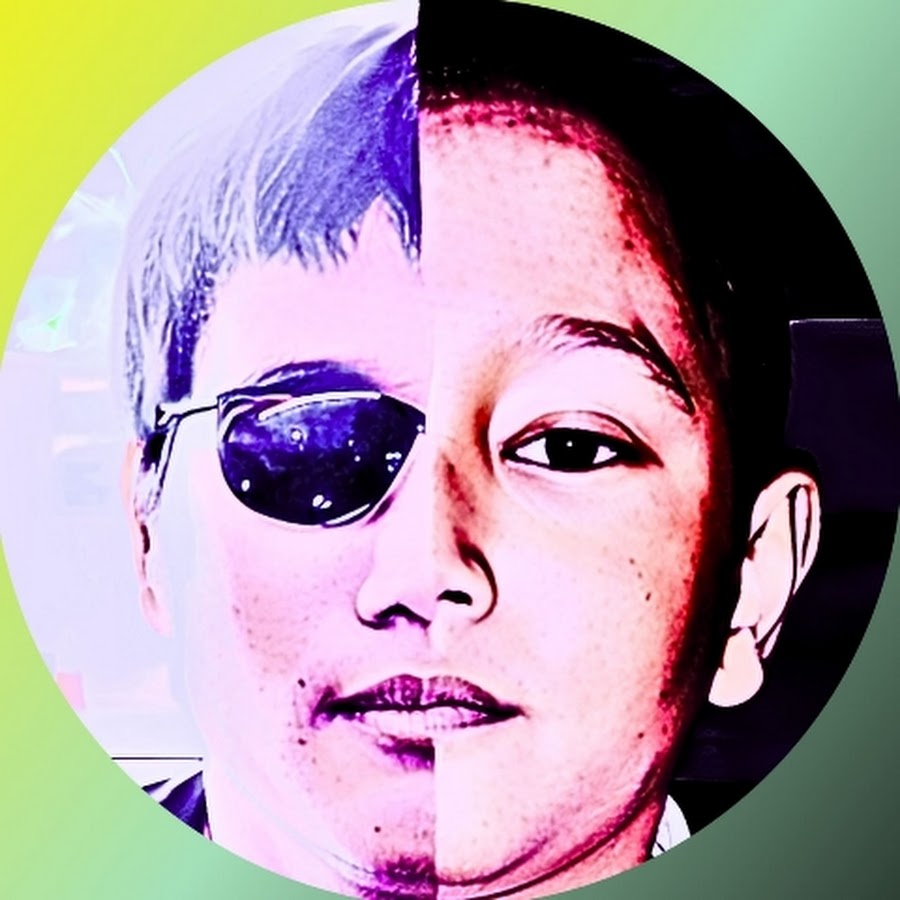

|  |
DAMAI |

PROFIL
"Dirimu adalah yang paling spesial jika dibandingkan dengan mimpi yang sudah ada."
Kutipan diatas adalah kutipan yang ditemukan Khresmupu saat dia memiliki teman yang baik di SMP dan SMA. Teman-temannya yang selalu mendukung dan menyemangati membuat terciptanya nama Khresmupu. Dulu Khresmupu hanya gamer dan youtuber yang tidak jelas, sekarang Khresmupu mulai mempelajari musik sambil menciptakan satu per satu lagunya.
Khresmupu, singkatan dari Khresna Mulia Putra, lahir pada 30 Desember 2006. Dia adalah seorang musisi yang menciptakan lagu bergenre intrumental. Dia sangat menyukai lagu orchestra yang membuat dia terinspirasi membuat lagu instrumental. Dia mulai belajar musik saat dia SD, tetapi sempat berhenti hingga SMA dan mulai terinspirasi membuat musik yang termotivasi oleh teman-temannya. Lalu mulai perilisan lagu pertama bernama "Khresmupu Theme" atau versi keduanya yaitu "There Will Always Hope" yang rilis pada Agustus 2023. Mulai dari lagu pertama itu Khresmupu ingin terus menerus membuat musik bergenre instrumental.
Selain Khresmupu adalah seorang musisi, dia juga adalah seorang perenang dengan gaya spesialisasi kupu-kupu. Terkadang lagu yang ia buat didapatkan dari saat ia berenang. Hal ini membuat ide Khresmupu untuk membuat musik tidak akan ada habisnya.
Khresmupu memiliki alasan kenapa dia ingin membuat lagu-lagu itu, karena dia merasa tenang saat mendengar lagu-lagu buatannya, apalagi lagu "Khresmupu Theme". Lagu ini benar-benar membawa suasana dia jauh dari permasalahan yan ada. Dan ini membuat terkadang dapat membuat dia berpikir jernih dan tidak merasa terbebankan dengan masalah yang ada. Khresmupu dapat lebih fokus dengan segala tujuan hidup yang dia inginkan dari kecil.